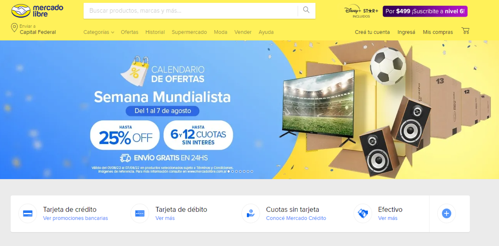
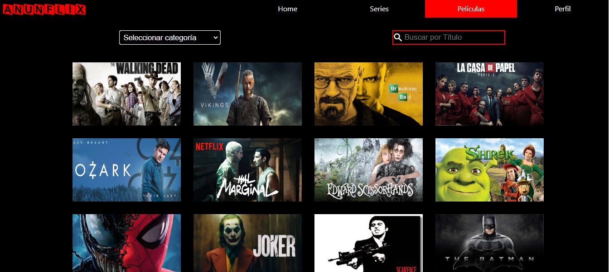

           <div class="proyecto">

   
            <div class="cajaE">
            <div class="tituloExp">
              <p>Proyectos</p></div>
              <div class="une">
            <div class="flexbe">
            <div class="primerexp">
               
               <div class="arribaj"> 
               <p class="clon">  Clon de Mercado Libre<p>
                <div class="masp">
                <strong><p> Challenge en proceso, cuyo objetivo es clonar la página de Mercado Libre,
                   al detalle. Cuenta con modo oscuro, caja de comentarios con validaciones, agregar preguntas,
                    carousel de imágenes, filtro de busqueda,y más.</p>
                    <p>Tecnologías utilizadas: HTML 5, CSS, JavaScript, Angular<p></strong></div>
            </div></div></div></div>
<div class="dos">
            <div class="flexbe">
              <div class="primerexp">
                 
                 <div class="arribaj"> 
                 <p class="clon"> Plataforma de Streaming de Video<p>
                  <div class="masp">
                  <strong><p> Proyecto terminado, cuyo objetivo fué crear un sitio web tipo Netflix. El mismo cuenta con
                      login, forma de pago, carousel de imágenes, filtros de busquedas: por serie o películas, temporadas y capitulos, 
                      inframe de trailer, resumen, ¡y más!</p>
                      <p>Tecnologías utilizadas: HTML 5, CSS, JavaScript, Angular<p></strong></div>
              </div></div></div>
          
          
            </div>
          </div>
           
          </div>